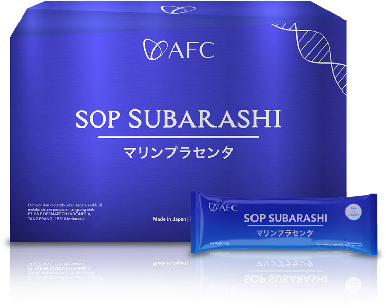

SOP Subarashi
Suplemen kesehatan Jepang yang mengandung Salmon Ovary Peptide (SOP), Sardine Peptide, dan Vegan Peptide (Fruit Flow). Mendukung kesehatan jantung dan pembuluh darah serta regenerasi sel.
- Membantu memperbaiki dan meregenerasi sel tubuh.
- Meningkatkan aliran darah dan oksigen ke seluruh tubuh.
- Mengurangi risiko hipertensi dan pembekuan darah.
- Mendukung fungsi jantung yang sehat dan mencegah penyakit kardiovaskular.
Utsukushhii
Produk perawatan kesehatan dengan 1 triliun bakteri baik per sachet, menjaga mikroflora usus, meningkatkan imun, dan memperbaiki tekstur serta kekenyalan kulit.
- Meningkatkan kesehatan pencernaan dan keseimbangan mikroflora usus.
- Mendukung sistem kekebalan tubuh.
- Memperbaiki tekstur kulit dan mengurangi kerutan.
- Memiliki efek anti-tumor dan anti-peradangan.
Hikari
Suplemen kaya antioksidan yang membantu melindungi sel dari radikal bebas, memperlambat penuaan, dan meningkatkan fungsi serta daya tahan otak dan tubuh.
- Mendukung fungsi kognitif dan memori.
- Melindungi mata dari paparan sinar biru.
- Meningkatkan aktivitas dan pembentukan sel saraf baru.
- Meningkatkan energi dan daya tahan tubuh secara keseluruhan.